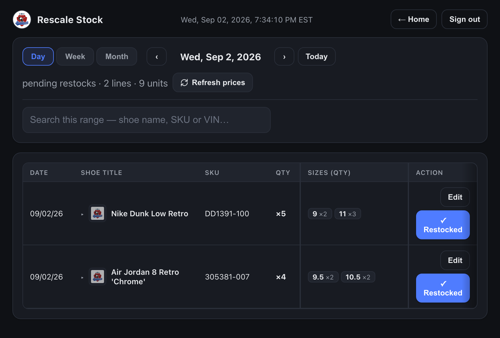

Some shipments are sold before they arrive. Those pairs are deliberately kept out of your listing worklist — if you listed one, we would be offering a pair that already belongs to somebody else’s order. Your job starts later: the pairs that were not sold come to you on Rescale Stock to be priced and listed like anything else.
Two things, and both are correct behaviour.
| What you see | Why |
|---|---|
| A shipment arrived, but nothing is on New Inventory | It was a pre-sell shipment. The pairs are held until the warehouse says which orders they cover. Nothing is broken and nothing is lost. |
| Only some of a shipment reaches you | Normal. The warehouse released the pairs that were not spoken for. The rest are already sold and are not ours to list. |
| The listing badges do not count them | Deliberate. A pre-sell pair is not listing work, so it must not sit in your backlog making it look larger than it is. |
When the warehouse presses Send for rescale, the pairs that were not sold land on your Rescale Stock worklist, dated the day they were released.

Short answers you can give without checking with anyone.
| Question | Answer |
|---|---|
| Can I see which pairs are pre-sold? | Not on your screens, and you do not need to. If you must know, ask the warehouse — the shipment carries a Pre-sell chip on their Batches and Inventory pages. |
| Can I list a pre-sold pair if a store is short? | No. It is already somebody’s. The system will not show it to you, and it must not be worked around. |
| A pre-sold pair came back — the buyer cancelled. | The warehouse hands it back on their Pre-sell page and it comes to you on Rescale Stock like the rest. Nothing for you to do until it appears. |
| Do these count towards my listing backlog? | Only once released. Until then they are invisible to every PH count, on purpose. |
| Stage | Who | Visible to PH? |
|---|---|---|
| Received, ticked pre-sell | Warehouse | No — held out of New Inventory |
| Pre-sold — an order covers it | Warehouse | No — never listed |
| Released for listing | Warehouse | Yes — appears on Rescale Stock |
| Priced & listed, ticked Restocked | PH team | Yes — ordinary inventory |